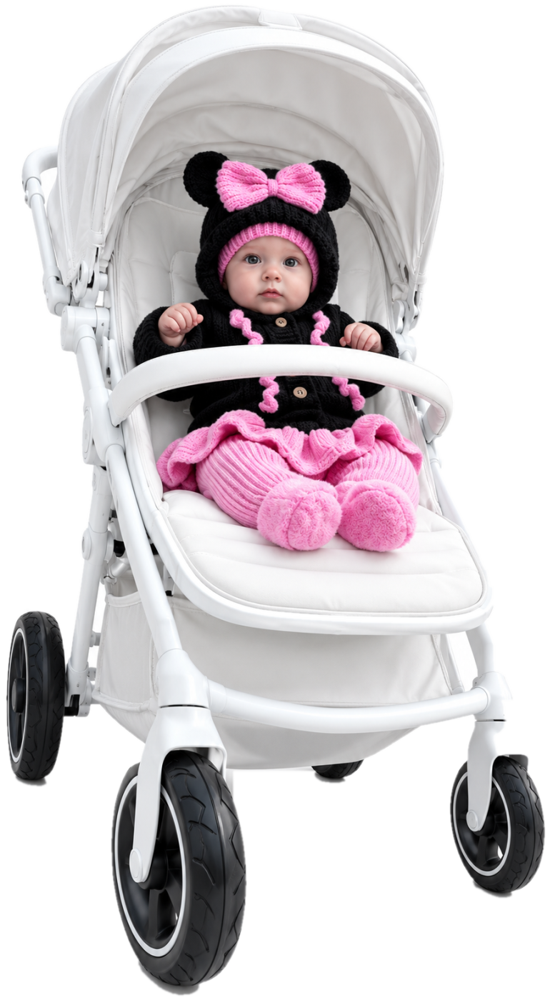

Здравствуйте друзья!
Давайте знакомиться!
Меня зовут Ольга, вяжу петельки спицами более 20лет☺️
Хочу поделиться своей историей, а точнее историей своего любимого дела вязание детской одежды:
Нежные вязаные комплекты для самых важных объятий. Создаю каждую вещь бережно — от первого клубочка до последней петельки.


Каждая вещь связана вручную — выбирайте вдохновение для своего особенного комплекта.
Стоимость зависит от размера, выбранной пряжи и деталей. Вот ориентиры для самых любимых комплектов.
Мягкий комплект для первых прогулок и подарка новорождённому.
2 200 ₽Комбинезон или кофточка, шапочка и пинетки в одном стиле.
4 200 ₽Создам цветовую историю и детали, которые вы выберете вместе.
от 5 000 ₽Срок изготовления — обычно 7–14 дней. Точную стоимость и сроки обсудим до начала работы.
Расскажите, для кого мы выбираем ниточки, — вместе придумаем тёплый и красивый комплект.
Написать мастеру ↗